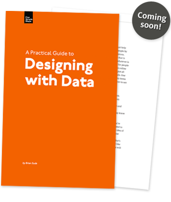

It has been no secret that I have been working on a book for Mark Boulton’s “Five Simple Steps” series. My book is entitled “Designing with Data” and it’s a introductory guide into the world of charts and graphs.
I do like a good visualization, but making them is much harder and time consuming than you might suspect. On top of that, the basic language of charts and graphs is very important and often overlooked. As visualizations and infographics are becoming the hot, new thing, I worry about the basic chart literacy that no one seems to be addressing. There are some great names out there and some great books, but each had their own slant to infographics. Gazing through a book by Edward Tufte is a work of art, but it doesn’t covering how to get started or the options available to you! Stephen Few has some great works about good and bad information design, but even those are already one step past someone who is still using excel to produce pie charts. (I have a thing against pie charts if you haven’t already noticed.) What is needed is a beginners guide to the different types of charts and graphs available in most software packages and when and why you should choose one over the other.
So after some chatting with Mark, I decided to step-up and quit complaining. I made the foolish decision to write a book on a topic that I can passionately tell you you’re crap at with out having to stick my own neck out. Well, how things have changed. I am now that guy who is giving you advice about what is good and what is bad, even though it is just my opinion and some sound justification, it’s certainly your turn to read the book and disagree with me. I didn’t want to make this a boring “Dummies Guide” or “Learn Charts and Graphs in 21 days” style book. While it holds your hand through some of the lighter points about the different types of charts and graphs, it is also intended to teach you about the design approaches to telling a better story with a multiple attributes. It is easy to throw our hands-up and just spit out a table of data. It takes a lot more effort to choose the right graph, to illustrate it, removing all the extra pointless information and focusing at just the underlying story. This is more so what I am trying to write about in the book, hopefully preventing it from getting too dry and boring.
For those of you not familiar with the Five Simple Steps series, it puts an interesting restriction on your writing. There are 5 sections of 5 chapters each for a total of 25 chapters, roughly 40,000 words total. I really enjoyed the writing because it made me sit down and thing about how this book was going to flow and prevent it from getting to lop-sided and ranting in any one section. In the end, the 25 chapters are roughly organized into sets of 5 logical set. The original working title was Designing with Statistics, but the word Data was swapped in the end. Probably better alliteration of the “D” and less scary a topic than “statistics”. If you wanted statistics, there is some hiding in there, but it is certainly light on all the hard core mathematics, and more so on interesting fun facts about colour, shapes, and psychological tricks. Either way, like it or not, Designing with Data became my guiding light while writing.
For those of you who have read other works I’ve written or have had conversations with me, I tend to ramble and get off-topic pretty quickly. In this book, I cover plenty of ground as well, but try to tie it all back together (sometimes more successfully than others), but it should make for an entertaining and educational read. I bet you didn’t think I could get a Holy Grail reference in the same book as some crop circle examples. I know I had fun writing it, many an hour I lost clicking link after link after link when doing some research. I tried to put as much of this new knowledge into this book, some just didn’t fit or make sense (maybe for a sequel).
Because this is more of a practical book than some theoretical or mathematical book, it has some background information at the start to justify information found later. The first 3 sections are designed to set you up as a better designer, why you should and shouldn’t make some choices as you are illustrating or generating the charts and graphs. It goes from some historical information, to colour theory, to how to trick your readers with a “well” designed graph. These are important aspects of design to understand before you get turned loose on creating your own charts. This is also pertinent information as you move from basic charts and graphs into full fledged visualizations, which comprise of several of the basic building blocks you’ll learn about in the last 2 sections. There I discuss common and uncommon types of charts taking one per chapter, except in the last chapter which I sneak in all the cool pointless charts that no one uses, but I still wanted to say a few words about. It’s an opportunity to dig deeper into the use-cases and design implications of choosing one chart over another. When you should use an area graph and when is it appropriate to choose a pie chart. Both are representing parts of a whole, so either should work right? Wrong! Each have their pros and cons depending on your data set, your audience and your intentions. If you don’t know the difference, or never heard about what an area chart is, then this book is for you.
The writing of this book was hard work, but plenty of fun too. I tried a few different methods of writing, from pomodoro and short bursts, to breaking things down into smaller articles, then re-assembling them together. Mark, Emma and Nick at “Mark Boulton Design” have been a great team to work with. We had monthly update meetings which kept everyone on track and aware of the timeline and deadlines. Most of the writing was done in Google Docs, which allowed me to access it from any computer and allowed them to easily add some notes along the way. I tried to create all the examples and illustrations while writing and put them into the document even though they were going to be replaced by the designer, Nick during the production phase. Making some quick mock-ups of what I wanted would allow him to re-create them in his style, hopefully faster if he had an example, than emailing back and forth trying to figure out what I meant in the text. So the copious amount of charts and graphs and their visual appeal is totally down to the work of Nick. I owe a huge debt of gratitude to Owen Gregory, my editor. The book is so much better due to his incredibly detailed approach. (If he’s reading this post, he’s probably gotten out his red pen and labelled all the mistakes)
If this book sounds interesting to you, I advise you to buy in triplicate. One for you, one for a friend and then a spare incase one gets damaged. We are also planning a workshop or two around several of the Five Simple Steps authors. If this is something that you want to see in your area or for your company, please let us know.
The book will be available as a PDF download on August 9th, 02010 and then in proper dead tree format a few months later. On the Five Simple Steps site, there will be a free sample chapter for everyone to download and get a better taste of what the book will be about.
I wrote this book because there was a niche to be filled and it’s a topic I am passionate about. I hope that this shows through in my writing and you enjoy reading it as much as I enjoyed writing it.